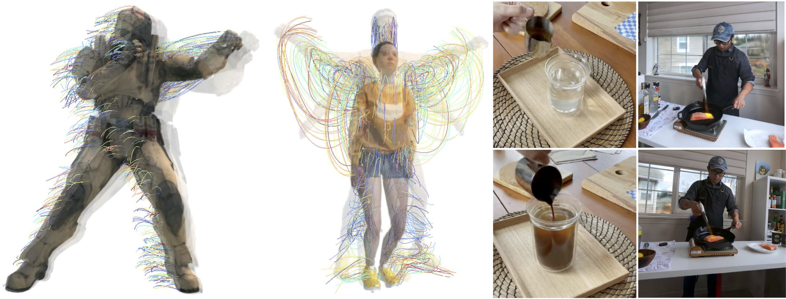
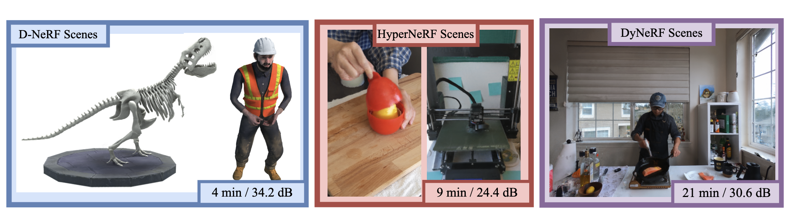
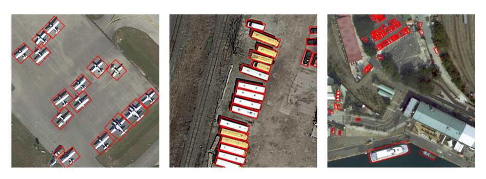
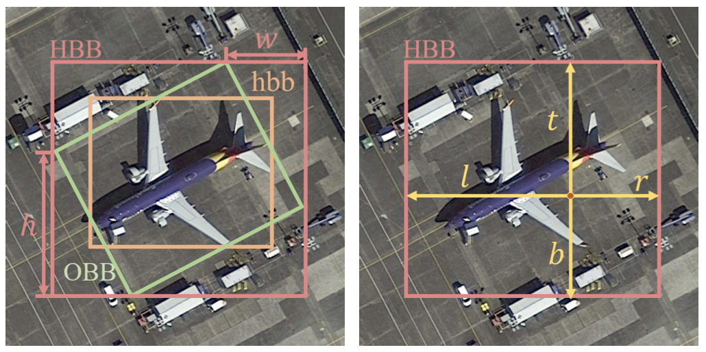

|
Youtian Lin I am a first-year Ph.D. student at Nanjing University, under the supervision of Prof. Yao Yao. My research focuses on 4D/3D reconstruction and generation. Previously, I pursued a Ph.D. at the Harbin Institute of Technology. I earned my M.S. from the Harbin Engineering University in 2021, where I was advised by Prof. Jian Guan. Email / Scholar / Twitter (X) / Github |
{kind=link}
ResearchMy research focuses on the intersection of computer vision and computer graphics, aiming to bridge the gap between 3D and Vision. Currently, I specialize in 4D/3D reconstruction and generation, with an emphasis on real-world applications. |

|
Direct3D: Scalable Image-to-3D Generation via 3D Latent Diffusion Transformer
Shuang Wu* Youtian Lin* Feihu Zhang Yifei Zeng Jingxi Xu Philip Torr Xun Cao Yao Yao Arxiv, 2024 Project Page Direct3D introduces a scalable approach for generating high-quality 3D assets from images. It uses D3D-VAE for efficient 3D shape encoding and D3D-DiT for modeling 3D latents. This method setting a new standard for 3D content creation. |

|
STAG4D: Spatial-Temporal Anchored Generative 4D Gaussians
Yifei Zeng* Yanqin Jiang* Siyu Zhu Yuanxun Lu Youtian Lin Hao Zhu Weiming Hu Xun Cao Yao Yao Arxiv, 2024 Github & Project Page High-fidelity 4D generation from diverse inputs (text, image, and video) with pre-trained diffusion models and dynamic 3D Gaussian splatting. |

|
Gaussian-Flow: 4D Reconstruction with Dynamic 3D Gaussian Particle
Youtian Lin, Zuozhuo Dai, Siyu Zhu, Yao Yao CVPR, 2024 (Highlight: 2.8%) Github & Project Page (The code will be released with pointrix soon, stay tuned!) We propose an innovative point-based method for rapid dynamic scene reconstruction and real-time rendering from both multi-view and monocular videos, leveraging advancements in point-based 3D Gaussian Splatting (3DGS). |

|
Relightable 3D Gaussian: Real-time Point Cloud Relighting with BRDF Decomposition and Ray Tracing
Jian Gao, Chun Gu, Youtian Lin, Hao Zhu, Xun Cao, Li Zhang, Yao Yao Arxiv, 2023 Github & Project Page Utilizuing 3D Gaussian points to represent a scene, allowing for material and lighting decomposition, enabling real-time relighting, ray-tracing, and editing of the 3D point cloud with improved BRDF estimation and novel view rendering results. |

|
UniDream: Unifying Diffusion Priors for Relightable Text-to-3D Generation
Zexiang Liu*, Yangguang Li*, Youtian Lin* Xin Yu, Sida Peng, Yan-Pei Cao, Xiaojuan Qi, Xiaoshui Huang, Ding Liang, Wanli Ouyang Arxiv, 2023 Github & Project Page Use a dual-phase training process for albedo-normal aligned multi-view diffusion and reconstruction models, a progressive generation procedure for geometry and albedo-textures using Score Distillation Sample (SDS), and an innovative SDS application for finalizing Physically Based Rendering (PBR) generation with fixed albedo. |
|

|
Ced-NeRF: A Compact and Efficient Method for Dynamic Neural Radiance Fields
Youtian Lin AAAI, 2024 Github We extend the Instant-NGP framework to support dynamic scenes, and show that it can be used to train a dynamic NeRF model that is both more compact and more efficient than prior work. |

|
EARL: An Elliptical Distribution aided Adaptive Rotation Label Assignment for Oriented Object Detection in Remote Sensing Images
Jian Guan, Mingjie Xie, Youtian Lin, Guangjun He, Pengming Feng IEEE TGRS, 2023 Github Incorporating adaptive scale sampling, dynamic elliptical distribution aided sampling, and spatial distance weighting to enhance the selection of high-quality positive samples. |

|
TOSO: Student's-T Distribution Aided One-Stage Orientation Target Detection in Remote Sensing Images
Pengming Feng*, Youtian Lin*, Jian Guan, Guangjun He, Huifeng Shi, Jonathon Chambers ICASSP, 2020 Utilizing a one-stage keypoint based network architecture and introducing a novel geometric transformation method to achieve orientation angle regression, along with incorporating Student's-t distribution to enhance performance |

|
IENet: Interacting Embranchment One Stage Anchor Free Detector for Orientation Aerial Object Detection
Youtian Lin, Pengming Feng, Jian Guan, Wenwu Wang, Jonathon Chambers Arxiv, 2019 We addressing the challenges of computational complexity in two-stage detectors by employing a per-pixel prediction approach with a geometric transformation, a branch interactive module, and an enhanced intersection over union (IoU) loss. |
Project |
 |
|
|
Source code borrow from jonbarron. |